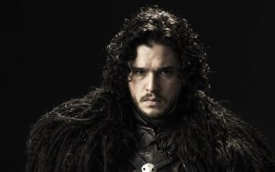

| Daenerys Targaryen |
Elle est la fille légitime du roi Aerys II Targaryen et de la reine Rhaella Targaryen. Née en l'an 284, c'est une jeune fille âgée de treize ans au début de la saga (seize ans dans l'adaptation télévisée) qui, comme la plupart des caractéristiques physiques des Targaryen, possède des cheveux d'or et d'argent, le teint clair, des yeux d'un violet améthyste clair et une carrure svelte. |
|
| Jon Snow |
Il est désigné comme étant le fils illégitime de lord Eddard Stark et d'une femme inconnue. Né en l'an 283, c'est un jeune garçon âgé de quatorze ans au début de la saga, (dix-sept ans dans l'adaptation télévisée) qui, comme la plupart des caractéristiques physiques des Stark, possède des cheveux noirs, le teint brun, des yeux d'un gris noir sombre et une carrure mince et gracieuse |

|
| Tyrion Lannister |
Il est le troisième enfant de lord Tywin Lannister, et donc le frère de Cersei et Jaime Lannister. Né en l'an 273, il est né nain et difforme, et sa mère est morte en couches en le mettant au monde, ce qui lui vaut un rejet farouche de la part de son père. |
|
| Jaime Lannister |
Il est le fils de lord Tywin Lannister, et aussi le frère jumeau de l'actuelle reine, Cersei Lannister. C'est un homme d'une trentaine d'années, extrêmement séduisant, arrogant, sûr de lui et considéré comme l'une des meilleures lames du royaume. Il fait partie de la garde Royale. |
|
| Cersei Lannister |
C'est la fille de lord Tywin Lannister et la sœur jumelle de Jaime Lannister, et elle est devenue reine des Sept Couronnes en épousant Robert Baratheon. Femme très ambitieuse et réputée pour sa beauté, elle supporte mal les restrictions que lui impose son sexe et n'a que du mépris pour son mari. |
|
| Sansa Stark |
C'est une jeune fille rêveuse et naïve, qui aime les joutes, les fêtes et les histoires de preux chevaliers et de princesses. Gracieuse et rêvant de chevalerie et du prince charmant des chansons, Sansa est belle, avec des cheveux auburn, des pommettes racées et des yeux d'un bleu profond, et alors qu'elle grandit acquiert une silhouette haute et élancée. |
|